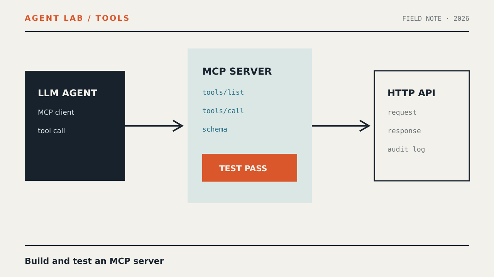

Практика · Инженерия агентов
MCP-сервер с нуля: инструмент, тестирование и подключение к агенту

Если каждую интеграцию приходится заново описывать для LangChain, собственного рантайма и очередного агента, проблема находится не в HTTP API, а в границе между API и моделью. В этом руководстве мы вынесем такую границу в MCP-сервер: он опубликует типизированный инструмент, безопасно обратится к прикладному API, пройдёт независимую проверку клиентом и затем станет источником инструментов для LLM-агента.
Что получится
Мы реализуем небольшой сервис поддержки. Существующий HTTP API умеет искать заявки по тексту. Поверх него появится Model Context Protocol (MCP)-сервер с инструментом search_tickets. Отдельный клиент проверит обнаружение и вызов инструмента, после чего тот же клиентский слой будет подключён к LLM-модели и станет частью AI-агента.
Пользователь
│
▼
LLM-агент ── tools/list ──► MCP-сервер
▲ │
└──── tools/call ◄──────────┤
▼
Ticket HTTP APIВ результате прикладной API не знает о моделях, а агент не знает о его заголовках, маршрутах и формате ошибок. Новый агентский рантайм должен поддержать MCP-клиент один раз, а не получать отдельный адаптер для каждого сервиса.
MCP сервер что это — короткий практический ответ
MCP-сервер — программа, которая публикует для совместимого клиента инструменты, ресурсы или шаблоны запросов по общему протоколу. Сервер описывает возможности машинно-читаемыми схемами и обрабатывает вызовы, но не обязан содержать модель или самостоятельно принимать решения.
В нашей конструкции обязанности разделены так:
| Компонент | За что отвечает | Чего не делает |
|---|---|---|
| Ticket API | Хранит заявки и выполняет предметный поиск | Не описывает инструменты для модели |
| MCP-сервер | Публикует схему, валидирует аргументы, вызывает API, нормализует результат | Не выбирает, когда нужен поиск |
| MCP-клиент | Инициализирует соединение, получает список и вызывает инструменты | Не рассуждает над задачей пользователя |
| LLM-агент | Выбирает инструмент и продолжает диалог с учётом результата | Не получает секрет API и не собирает HTTP-запрос вручную |
Главная выгода — стабильная граница. Схема search_tickets остаётся одинаковой, даже если внутри вы замените REST-маршрут, способ авторизации или саму систему заявок.
Перед началом
Понадобятся Node.js 20 или новее, npm и терминал. Пример написан на TypeScript и использует современный транспорт Streamable HTTP. Версии зависимостей фиксируются lock-файлом; при обновлении MCP SDK сначала повторите клиентские проверки из этой статьи.
Мы не будем использовать реальные заявки или секреты. Локальный API вернёт синтетические записи. Позже его можно заменить вашим сервисом без изменения внешнего контракта MCP-инструмента.
node --version
npm --version
mkdir ticket-mcp
cd ticket-mcp
npm init -y
npm install @modelcontextprotocol/sdk express zod
npm install --save-dev typescript tsx @types/node @types/express
mkdir srcДобавьте команды и режим модулей в package.json:
{
"name": "ticket-mcp",
"version": "1.0.0",
"private": true,
"type": "module",
"scripts": {
"api": "tsx src/mock-api.ts",
"server": "tsx src/server.ts",
"check": "tsx src/check.ts",
"agent": "tsx src/agent.ts",
"typecheck": "tsc --noEmit"
},
"dependencies": {
"@modelcontextprotocol/sdk": "^1.0.0",
"express": "^5.0.0",
"zod": "^3.0.0"
},
"devDependencies": {
"@types/express": "^5.0.0",
"@types/node": "^22.0.0",
"tsx": "^4.0.0",
"typescript": "^5.0.0"
}
}Диапазоны выше позволяют npm выбрать совместимые выпуски внутри указанных основных версий. После установки сохраните package-lock.json и используйте npm ci в автоматических проверках.
Создайте tsconfig.json:
{
"compilerOptions": {
"target": "ES2022",
"module": "NodeNext",
"moduleResolution": "NodeNext",
"strict": true,
"esModuleInterop": true,
"skipLibCheck": true,
"noUncheckedIndexedAccess": true
},
"include": ["src/**/*.ts"]
}Шаг 1. Подготовьте воспроизводимый HTTP API
Сначала создадим зависимость отдельно от MCP. Это важная инженерная граница: если прямой API-вызов не работает, отладка протокола только добавит шум.
Файл src/mock-api.ts:
import express from "express";
type Ticket = {
id: string;
title: string;
status: "open" | "closed";
};
const tickets: Ticket[] = [
{ id: "T-101", title: "Не приходит письмо подтверждения", status: "open" },
{ id: "T-102", title: "Ошибка при экспорте отчёта", status: "closed" },
{ id: "T-103", title: "Не обновляется платёжный статус", status: "open" }
];
const app = express();
app.get("/tickets", (req, res) => {
const query = String(req.query.query ?? "").trim().toLocaleLowerCase("ru");
const limit = Math.min(Number(req.query.limit ?? 5), 20);
if (!query) {
res.status(400).json({
error: "query_required"
});
return;
}
const items = tickets
.filter((ticket) =>
`${ticket.id} ${ticket.title} ${ticket.status}`
.toLocaleLowerCase("ru")
.includes(query)
)
.slice(0, limit);
res.json({ items });
});
app.listen(4100, "127.0.0.1", () => {
console.log("Ticket API: http://127.0.0.1:4100");
});Запустите API в первом терминале:
npm run apiВо втором терминале проверьте его напрямую:
curl --fail --silent --show-error \
"http://127.0.0.1:4100/tickets?query=письмо&limit=5"Ожидайте JSON с массивом items. Это не опубликованный результат эксперимента, а форма ответа, заложенная в приведённый код. Если запрос не проходит, сначала устраните ошибку запуска или порта и только затем переходите к MCP.
Шаг 2. Спроектируйте контракт инструмента
Не переносите HTTP-маршрут в MCP буквально. Инструмент должен выражать намерение агента, а не устройство внутреннего API. Для поиска достаточно двух аргументов:
query— обязательная непустая строка длиной до 200 символов;limit— необязательное целое число от 1 до 20.
Инструмент вернёт и текст для модели, и structuredContent для клиента, который хочет обработать данные без разбора текста:
{
"items": [
{
"id": "T-101",
"title": "Не приходит письмо подтверждения",
"status": "open"
}
]
}Имя инструмента — часть публичного контракта. Не включайте в него название фреймворка или текущего поставщика API. search_tickets переживёт внутреннюю миграцию лучше, чем call_vendor_v2_get_tickets.
Хорошее описание инструмента
Описание должно отвечать модели на три вопроса: когда вызывать инструмент, что он ищет и чего он не делает. Например:
Ищет заявки поддержки по идентификатору, словам из заголовка
или статусу. Используй инструмент, когда для ответа нужны сведения
о существующей заявке. Инструмент ничего не изменяет.Аннотация readOnlyHint помогает клиентам представить действие как читающее. Она не является механизмом безопасности: реальное отсутствие записи обеспечивается кодом, правами технической учётной записи и политикой целевого API.
Шаг 3. Реализуйте MCP-сервер
Файл src/server.ts содержит три слоя: клиент прикладного API, фабрику MCP-сервера и HTTP-маршрут транспорта.
import express, { type Request, type Response } from "express";
import { McpServer } from "@modelcontextprotocol/sdk/server/mcp.js";
import { StreamableHTTPServerTransport }
from "@modelcontextprotocol/sdk/server/streamableHttp.js";
import { z } from "zod";
const API_BASE_URL =
process.env.TICKET_API_URL ?? "http://127.0.0.1:4100";
const upstreamTicketSchema = z.object({
id: z.string(),
title: z.string(),
status: z.enum(["open", "closed"])
});
const upstreamResponseSchema = z.object({
items: z.array(upstreamTicketSchema)
});
async function searchTickets(query: string, limit: number) {
const url = new URL("/tickets", API_BASE_URL);
url.searchParams.set("query", query);
url.searchParams.set("limit", String(limit));
const response = await fetch(url, {
method: "GET",
headers: {
accept: "application/json"
},
signal: AbortSignal.timeout(5000)
});
if (!response.ok) {
throw new Error(`Ticket API returned HTTP ${response.status}`);
}
return upstreamResponseSchema.parse(await response.json());
}
function createServer() {
const server = new McpServer({
name: "ticket-search",
version: "1.0.0"
});
server.registerTool(
"search_tickets",
{
title: "Поиск заявок",
description:
"Ищет заявки поддержки по идентификатору, словам из заголовка " +
"или статусу. Используй, когда для ответа нужны сведения " +
"о существующей заявке. Ничего не изменяет.",
inputSchema: {
query: z.string().trim().min(1).max(200)
.describe("Идентификатор, слова из заголовка или статус"),
limit: z.number().int().min(1).max(20).default(5)
.describe("Максимальное число результатов")
},
outputSchema: {
items: z.array(upstreamTicketSchema)
},
annotations: {
readOnlyHint: true,
destructiveHint: false,
idempotentHint: true,
openWorldHint: false
}
},
async ({ query, limit }) => {
try {
const result = await searchTickets(query, limit);
return {
content: [
{
type: "text",
text: result.items.length === 0
? "Заявки не найдены."
: JSON.stringify(result, null, 2)
}
],
structuredContent: result
};
} catch (error) {
const message =
error instanceof Error ? error.message : "Unknown error";
console.error("search_tickets failed", { message });
return {
content: [
{
type: "text",
text: "Не удалось получить заявки из внутреннего сервиса."
}
],
isError: true
};
}
}
);
return server;
}
const app = express();
app.use(express.json({ limit: "256kb" }));
app.get("/health", (_req, res) => {
res.json({ status: "ok" });
});
app.all("/mcp", async (req: Request, res: Response) => {
const server = createServer();
const transport = new StreamableHTTPServerTransport({
sessionIdGenerator: undefined
});
res.on("close", () => {
void transport.close();
void server.close();
});
try {
await server.connect(transport);
await transport.handleRequest(req, res, req.body);
} catch (error) {
console.error("MCP request failed", error);
if (!res.headersSent) {
res.status(500).json({
jsonrpc: "2.0",
error: {
code: -32603,
message: "Internal server error"
},
id: null
});
}
}
});
app.listen(4200, "127.0.0.1", () => {
console.log("MCP endpoint: http://127.0.0.1:4200/mcp");
});Запустите проверку типов, а затем сервер:
npm run typecheck
npm run serverВ примере используется stateless-режим: для каждого HTTP-запроса создаётся отдельная пара сервер–транспорт, а идентификатор сессии отсутствует. Для одного независимого инструмента это упрощает масштабирование. Уведомления, возобновление потока и серверное состояние потребуют сессионного транспорта и хранилища сессий.
Почему обычного curl недостаточно
Маршрут /health показывает только то, что процесс принимает HTTP-запросы. Он ничего не говорит об инициализации MCP, согласовании версии протокола, списке инструментов и выполнении вызова. Для этого нужен настоящий MCP-клиент.
Шаг 4. Проверьте сервер отдельным MCP-клиентом
Файл src/check.ts подключается к серверу тем же способом, которым позже подключится агент. Он не обращается к Ticket API напрямую и поэтому проверяет всю цепочку.
import assert from "node:assert/strict";
import { Client } from "@modelcontextprotocol/sdk/client/index.js";
import { StreamableHTTPClientTransport }
from "@modelcontextprotocol/sdk/client/streamableHttp.js";
const client = new Client({
name: "ticket-mcp-check",
version: "1.0.0"
});
const transport = new StreamableHTTPClientTransport(
new URL("http://127.0.0.1:4200/mcp")
);
try {
await client.connect(transport);
const listed = await client.listTools();
const tool = listed.tools.find(
(candidate) => candidate.name === "search_tickets"
);
assert.ok(tool, "search_tickets отсутствует в tools/list");
assert.equal(tool.inputSchema.type, "object");
assert.ok(
tool.inputSchema.required?.includes("query"),
"query должен быть обязательным"
);
const success = await client.callTool({
name: "search_tickets",
arguments: {
query: "письмо",
limit: 3
}
});
assert.notEqual(success.isError, true, "Корректный вызов завершился ошибкой");
assert.ok(
Array.isArray(success.content) && success.content.length > 0,
"Инструмент вернул пустой content"
);
const empty = await client.callTool({
name: "search_tickets",
arguments: {
query: "несуществующее синтетическое значение",
limit: 3
}
});
assert.notEqual(empty.isError, true, "Пустая выдача не должна быть ошибкой");
let invalidRejected = false;
try {
await client.callTool({
name: "search_tickets",
arguments: {
query: "",
limit: 100
}
});
} catch {
invalidRejected = true;
}
assert.equal(
invalidRejected,
true,
"Некорректные аргументы должны быть отклонены"
);
console.log("MCP CHECK PASSED");
} finally {
await transport.close();
}При запущенных API и MCP-сервере выполните:
npm run checkСтрока MCP CHECK PASSED печатается только после всех утверждений. Это локальный критерий из нашего скрипта, а не заранее заявленный результат запуска на вашей машине.
Тестирование MCP сервера: минимальная матрица
Один успешный вызов подтверждает только счастливый путь. Перед подключением модели проверьте минимум пять классов поведения.
| Сценарий | Как воспроизвести | Что должно быть доказано |
|---|---|---|
| Обнаружение | listTools() |
Имя, описание и входная схема доступны клиенту |
| Корректный вызов | Запрос с query и допустимым limit |
Есть контент, вызов не помечен ошибкой |
| Пустая выдача | Синтетический запрос без совпадений | Ноль результатов не считается неисправностью |
| Ошибка аргументов | Пустой query, limit: 100 |
Схема не пропускает неверный вызов к API |
| Отказ зависимости | Остановить Ticket API и повторить вызов | Клиент получает isError, а не секрет или трассировку |
Проверка отказа API
Остановите только процесс на порту 4100, оставив MCP-сервер запущенным, и повторите npm run check. Полная проверка теперь должна завершиться отрицательно на успешном сценарии. Это ожидаемый исход контролируемой неисправности: он показывает, что тест действительно замечает отказ зависимости.
Для автоматизации лучше вынести этот случай в отдельный скрипт, который явно ожидает isError: true. Не делайте успешным тест, который принимает и корректный ответ, и ошибку: такой тест ничего не защищает.
Что фиксировать в CI
- команда
npm ciиспользует сохранённый lock-файл; npm run typecheckпроходит до запуска процессов;- API и MCP-сервер запускаются в изолированном окружении;
- проверка ждёт готовности обоих процессов, а не использует случайную задержку;
- после теста процессы корректно останавливаются;
- логи и артефакты не содержат токены и пользовательские данные;
- обновление SDK не принимается при изменении схемы или семантики ошибок.
Шаг 5. Превратите MCP-инструменты в формат модели
MCP-клиент и API модели решают разные задачи. Клиент получает инструменты в MCP, а модель обычно ожидает массив функций с именем, описанием и JSON Schema. Нужен один небольшой адаптер на уровне агентского рантайма — общий для всех MCP-серверов.
Ниже используется HTTP-интерфейс модели, совместимый с форматом Chat Completions. Задайте адрес, имя модели и токен вашего провайдера через окружение. Секрет не передаётся MCP-серверу и не попадает в аргументы инструмента.
Файл src/agent.ts:
import { Client } from "@modelcontextprotocol/sdk/client/index.js";
import { StreamableHTTPClientTransport }
from "@modelcontextprotocol/sdk/client/streamableHttp.js";
type ChatMessage =
| { role: "system" | "user" | "assistant"; content: string }
| {
role: "assistant";
content: string | null;
tool_calls: Array<{
id: string;
type: "function";
function: { name: string; arguments: string };
}>;
}
| {
role: "tool";
tool_call_id: string;
content: string;
};
type ModelResponse = {
choices: Array<{
message: {
role: "assistant";
content: string | null;
tool_calls?: Array<{
id: string;
type: "function";
function: { name: string; arguments: string };
}>;
};
}>;
};
const MODEL_URL = process.env.MODEL_URL;
const MODEL_NAME = process.env.MODEL_NAME;
const MODEL_API_KEY = process.env.MODEL_API_KEY;
if (!MODEL_URL || !MODEL_NAME || !MODEL_API_KEY) {
throw new Error(
"Задайте MODEL_URL, MODEL_NAME и MODEL_API_KEY"
);
}
const mcpClient = new Client({
name: "ticket-agent",
version: "1.0.0"
});
const mcpTransport = new StreamableHTTPClientTransport(
new URL("http://127.0.0.1:4200/mcp")
);
await mcpClient.connect(mcpTransport);
try {
const { tools: mcpTools } = await mcpClient.listTools();
const modelTools = mcpTools.map((tool) => ({
type: "function" as const,
function: {
name: tool.name,
description: tool.description ?? "",
parameters: tool.inputSchema
}
}));
const messages: ChatMessage[] = [
{
role: "system",
content:
"Ты помощник службы поддержки. " +
"Если вопрос относится к существующим заявкам, " +
"используй доступный инструмент. " +
"Не придумывай идентификаторы и статусы."
},
{
role: "user",
content: "Есть ли открытая заявка про письмо подтверждения?"
}
];
for (let step = 0; step < 5; step += 1) {
const response = await fetch(MODEL_URL, {
method: "POST",
headers: {
authorization: `Bearer ${MODEL_API_KEY}`,
"content-type": "application/json"
},
body: JSON.stringify({
model: MODEL_NAME,
messages,
tools: modelTools,
tool_choice: "auto",
temperature: 0
}),
signal: AbortSignal.timeout(30000)
});
if (!response.ok) {
throw new Error(`Model API returned HTTP ${response.status}`);
}
const payload = (await response.json()) as ModelResponse;
const message = payload.choices[0]?.message;
if (!message) {
throw new Error("Model API returned no message");
}
if (!message.tool_calls || message.tool_calls.length === 0) {
console.log(message.content ?? "");
break;
}
messages.push({
role: "assistant",
content: message.content,
tool_calls: message.tool_calls
});
for (const call of message.tool_calls) {
const allowed = mcpTools.some(
(tool) => tool.name === call.function.name
);
if (!allowed) {
messages.push({
role: "tool",
tool_call_id: call.id,
content: JSON.stringify({
error: "unknown_tool"
})
});
continue;
}
let args: Record<string, unknown>;
try {
args = JSON.parse(call.function.arguments);
} catch {
messages.push({
role: "tool",
tool_call_id: call.id,
content: JSON.stringify({
error: "invalid_json_arguments"
})
});
continue;
}
const result = await mcpClient.callTool({
name: call.function.name,
arguments: args
});
messages.push({
role: "tool",
tool_call_id: call.id,
content: JSON.stringify({
isError: result.isError === true,
content: result.content,
structuredContent: result.structuredContent
})
});
}
if (step === 4) {
throw new Error("Agent exceeded the tool-step limit");
}
}
} finally {
await mcpTransport.close();
}Запуск зависит от API выбранной модели. Для совместимого адреса переменные могут выглядеть так:
export MODEL_URL="https://model-provider.example/v1/chat/completions"
export MODEL_NAME="tool-capable-model"
export MODEL_API_KEY="replace-with-local-secret"
npm run agentАдрес и значения выше — заполнители, а не действующие реквизиты. Если провайдер использует другой формат сообщений или ответов, меняется только функция обращения к модели. MCP-клиент, обнаружение инструментов и callTool остаются прежними.
Что именно сделал агентский цикл
- Подключился к MCP-серверу.
- Получил список инструментов через
listTools(). - Передал их схемы модели как функции.
- Принял от модели имя инструмента и JSON-аргументы.
- Проверил, что имя действительно опубликовано сервером.
- Вызвал инструмент через MCP, а не прямым HTTP-запросом.
- Вернул результат модели сообщением роли
tool. - Остановил цикл после обычного ответа или пяти шагов.
Именно этот адаптер стоит реализовать один раз в агентском рантайме. После этого новый MCP-сервер подключается обнаружением, а не отдельным кодом для каждого инструмента.
Финальная проверка всей цепочки
Проверяйте слои по порядку. Так место отказа остаётся очевидным:
- Запустите
npm run apiи проверьте Ticket API черезcurl. - Запустите
npm run serverи проверьтеcurl http://127.0.0.1:4200/health. - Выполните
npm run checkи убедитесь, что контрактные утверждения проходят. - Задайте реквизиты совместимого API модели и выполните
npm run agent. - Посмотрите в журнале MCP-сервера, что вызван именно
search_tickets. - Замените вопрос на не связанный с заявками и проверьте, что модель не вызывает поиск без необходимости.
- Остановите Ticket API и подтвердите, что агент получает контролируемую ошибку инструмента, а не внутреннюю трассировку.
Рабочая интеграция должна выдерживать не только вопрос из примера. Добавьте собственный набор синтетических запросов:
- поиск по точному идентификатору;
- поиск по словам заголовка;
- поиск по статусу;
- запрос без совпадений;
- вопрос, для которого инструмент не нужен;
- попытка заставить модель передать слишком большой
limit; - недоступность API и превышение тайм-аута.
Не оценивайте только красоту финального текста. Для агентской интеграции важнее наблюдаемые факты: какой инструмент был выбран, какие аргументы ушли на сервер, был ли результат ошибкой и сколько шагов занял цикл.
Типовые отказы и диагностика
Клиент получает 404 на /mcp
Проверьте URL и метод маршрута. Streamable HTTP использует один MCP endpoint, а не устаревшую пару произвольных маршрутов для отправки сообщений и SSE. Клиентский и серверный транспорты должны относиться к совместимому поколению SDK.
Сервер виден, но список инструментов пуст
Убедитесь, что registerTool вызывается до server.connect(transport). Не создавайте сервер в одной фабрике, а транспорт не подключайте к другому экземпляру.
Схема есть, но вызов всегда отклоняется
Сравните фактические аргументы модели с inputSchema. Частая причина — число приходит строкой, поле называется иначе или модель добавляет неизвестные свойства. Не исправляйте это отключением валидации: уточните описание или нормализуйте только заранее разрешённые формы.
Пустой результат считается ошибкой
«Не найдено» — нормальный предметный исход поиска. Возвращайте пустой items и понятный текст без isError. Флаг ошибки оставьте для недоступности зависимости, некорректного ответа API и других сбоев выполнения.
Агент вызывает выдуманный инструмент
Проверяйте имя по фактическому результату listTools() перед callTool. Никогда не превращайте имя от модели в имя функции, путь к файлу или URL без таблицы разрешённых возможностей.
Модель бесконечно повторяет вызов
Ограничьте число шагов и сохраняйте полную последовательность сообщений. Повтор часто означает, что результат инструмента не отвечает заявленному контракту, ошибка скрыта в обычном тексте или модель не видит сообщение роли tool.
После обновления SDK перестал работать транспорт
Проверьте основную версию пакета, импорты сервера и клиента, затем восстановите зависимости через lock-файл. Не обновляйте одновременно SDK, схему инструмента и агентский адаптер: иначе источник несовместимости придётся искать сразу в трёх местах.
HTTP API отвечает неожиданной структурой
Внешний ответ валидируется через Zod до передачи модели. При несовместимости инструмент вернёт управляемую ошибку. Не передавайте непроверенный JSON как structuredContent: изменение upstream-контракта иначе незаметно попадёт в агента.
Что изменить перед публикацией сервера
Локальный пример слушает только 127.0.0.1. Для удалённого доступа недостаточно заменить адрес на 0.0.0.0. Перед развёртыванием добавьте:
- аутентификацию клиента и проверку полномочий для каждого инструмента;
- TLS на внешней границе;
- проверку
Hostи разрешённых источников, если доступ идёт из браузерного окружения; - ограничение размера тела, частоты запросов и времени выполнения;
- отдельную техническую учётную запись с правом только на чтение заявок;
- фиксированный базовый URL API без возможности передать его из аргументов модели;
- очистку логов от токенов, персональных данных и полного содержимого заявок;
- идентификатор трассы, связывающий агентский шаг, MCP-вызов и upstream-запрос;
- корректное завершение HTTP-сервера и активных транспортов при остановке процесса.
Для инструментов записи добавьте отдельный контур подтверждения. Первый инструмент может подготовить операцию и вернуть её параметры, а второй — выполнить подтверждённую операцию по короткоживущему идентификатору. Системная инструкция модели не заменяет серверную авторизацию.
Ограничения решения
MCP унифицирует обнаружение и вызов возможностей, но не делает разные API семантически одинаковыми. Контракт инструмента, нормализацию ошибок, права и предметную логику всё равно нужно спроектировать.
Stateless-режим подходит не всем сценариям. Серверные уведомления, продолжительные операции, возобновление потока и состояние между запросами требуют сессий или отдельного хранилища. При горизонтальном масштабировании состояние нельзя оставлять только в памяти случайного экземпляра.
Схема аргументов уменьшает число некорректных вызовов, но не доказывает безопасность значения. Строка может формально соответствовать схеме и всё равно содержать чужой идентификатор, запрещённый фильтр или инструкцию для уязвимого downstream-компонента.
Качество выбора инструмента зависит от модели, описания и контекста. Проверка MCP-клиентом доказывает технический контракт сервера, но не доказывает, что любая модель будет выбирать инструмент правильно. Для этого нужен отдельный набор агентских сценариев с проверкой выбранных действий.
Наконец, переносимость ограничена возможностями клиента. Если агентский фреймворк не умеет MCP напрямую, ему всё равно понадобится один клиентский адаптер. Выгода в том, что этот адаптер общий для серверов, а не пишется заново для каждого HTTP API.
Контрольный список перед передачей команде
- контракт инструмента описывает намерение, а не внутренний HTTP-маршрут;
- входные аргументы ограничены типом, длиной, диапазоном и обязательностью;
- ответ upstream API валидируется до передачи клиенту;
- пустой предметный результат отделён от технической ошибки;
- внутренние сообщения и секреты не возвращаются модели;
- MCP-клиент проверяет обнаружение, вызов, валидацию и отказ зависимости;
- агент разрешает только инструменты из текущего
tools/list; - число шагов агента и тайм-ауты ограничены;
- lock-файл сохранён, а обновление SDK проходит контрактную проверку;
- удалённый сервер защищён аутентификацией, TLS и узкими правами;
- трассировка позволяет связать решение модели с вызовом API;
- синтетические проверки не используют реальные клиентские данные.
Итог: как создать MCP сервер без привязки к одному агенту
- Сначала проверьте прикладной HTTP API отдельно.
- Спроектируйте инструмент как стабильное предметное действие.
- Опишите аргументы строгой схемой и валидируйте upstream-ответ.
- Опубликуйте инструмент через Streamable HTTP.
- Проверьте сервер настоящим MCP-клиентом до подключения модели.
- Преобразуйте результат
tools/listв формат инструментов модели. - Маршрутизируйте вызов модели обратно через
callTool. - Ограничьте имена, шаги, тайм-ауты, права и объём журналирования.
Получившаяся граница решает исходную проблему: Ticket API адаптирован один раз — в MCP-сервере. Агентские рантаймы подключаются через общий клиентский слой, а совместимость проверяется без участия модели. При смене фреймворка предметная интеграция остаётся на месте.